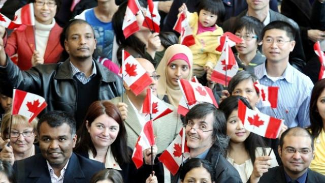
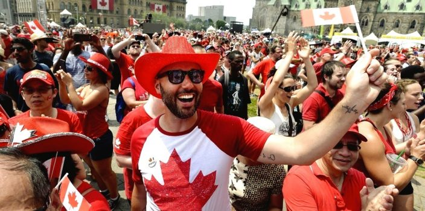

Canada had a rich history of its first inhabitants, the Indigenous peoples. They developed cultural practices and strategies tailored to
Canada's landscape. In modern-day Canada, we recognize these roots of descendents from various indigenous groups, such as the First Nations people and the Inuit.
They remain as important contributors to Canada's identity and culture as it maintains strong ties to their ancestral lands. The arrival of the Europeans took an interesting turning point for
Canada's history, as it led to the British and French colonization of the land. Their influence, ranging from language and architecture to education
and goverance, has left a lasting impact on Canadian culture. Britain clamied Canada but despite that Canada still has a strong cultural diversity that
extends beyond jsut the Britsh and French influence as it has wlecomed immgration from all over the world such as Europe all the way to Asia, leading to a multicultural society that celebrates diversity and inclusivity.
The media often protays Canadians as nice, polite, and friendly people. They also think of Candians as "living in igloos" as they see how bad Canada's winters can get.
However, that isn't true for all Canadians. To say all of them "live in igloos" is just not true as what about the people in Canada who just can't deal with the cold weather.
The media also protrays Canadians as being obessed with hockey as we created the sport! These protrayals can not be
applied to all Candians as we have a very diverse and multicultral society.

Canadians say that they are a multicultural and diverse society. They also say they are very passionate about hockey as they created the sport.
Canada also promates a lot of different holidays such as Canada day, Lunar New Year, etc as a way to celebrate the different cultures that are in Canada.

Multiculturalism in Canada ensures that all citizens in Canada can maintain their identities, take pride in their ancestry and have a sense of belonging.
Canada was the first country in the world to adopt multiculturalism as an official policy in 1971.
Mulcultralism in Canada strives to unite people from all different backgrounds to come together regardless of race, ethnic orgin and religious beliefs.
Multiculturalism plays an important role in shaping Canada's identity as it promotes equality, respect and admiration from many different cultures.